重要
翻訳は あなたが参加できる コミュニティの取り組みです。このページは現在 81.62% 翻訳されています。
13.1. ラスタプロパティダイアログ
ラスターデータはピクセル（またはセル）で構成されており、各ピクセルには値が割り当てられています。一般的に、以下のような様々な種類のデータを格納するために使われます:
衛星画像、デジタル航空写真、スキャンされた地図などの画像
数値標高モデル（DEM）、数値地形モデル（DTM）のような標高データ
土地被覆、土壌の種類、降雨量など、その他の種類のデータ。
Raster data can be stored in several supported formats, including GeoTIFF, ERDAS Imagine, ArcInfo ASCII GRID, PostgreSQL Raster and others. See more at データを開く.
ラスタレイヤのプロパティを表示・設定するには、マップ凡例のレイヤ名をダブルクリックするか、レイヤ名を右クリックして、コンテキストメニューから プロパティ を選択します。これにより ラスタレイヤプロパティ ダイアログが表示されます。
このダイアログにはさまざまなタブがあります：
External plugins ([2]) tabs |


Tip
ライブ更新レンダリング
レイヤスタイル設定パネル はレイヤプロパティダイアログの一般的な機能のいくつかを提供する、優れたモードレスのウィジェットであり、レイヤスタイルの設定を素早く行って、変更結果をマップキャンバス上で確認できます。
注釈
埋め込まれたレイヤ（ 外部プロジェクトからのレイヤの埋め込み を参照）のプロパティ（シンボロジ、ラベル、アクション、デフォルト値、フォーム...）は元のプロジェクトファイルから引用されており、この動作を壊す可能性のある変更を避けるため、埋め込まれたレイヤに対するレイヤプロパティダイアログは利用できなくされています。
13.1.1. 情報プロパティ
 情報 タブは読み取り専用で、現在のレイヤの要約された情報やメタデータをさっと掴むことができる興味深い場所です。提供される情報には、以下のものがあります：
情報 タブは読み取り専用で、現在のレイヤの要約された情報やメタデータをさっと掴むことができる興味深い場所です。提供される情報には、以下のものがあります：
一般情報：プロジェクト内での名前、ソースへのパス、付随的なファイルのリスト、最終更新時刻、ファイルの大きさ、使用しているプロバイダ
カスタムプロパティ、アクティブなプロジェクト内で、そのレイヤに関する追加情報を保存するために使用されます。デフォルトのカスタムプロパティには、ラスターレイヤで
 Identify features フォーマットを使用した際の結果の表示形式に影響を与える 地物情報表示フォーマット があります。さらにプロパティを作成・管理する場合は、PyQGIS を使用し、具体的には setCustomProperty() メソッドを通じて設定することが可能です。
Identify features フォーマットを使用した際の結果の表示形式に影響を与える 地物情報表示フォーマット があります。さらにプロパティを作成・管理する場合は、PyQGIS を使用し、具体的には setCustomProperty() メソッドを通じて設定することが可能です。レイヤのプロバイダからの情報：領域、幅、高さ、データタイプ、GDALドライバ、バンドの統計情報
座標参照系（CRS）：CRSの名前、単位、投影法、精度、参照（静的か動的か）
レイヤのプロパティから読み取った情報：データタイプ、領域、幅/高さ、圧縮、ピクセルの大きさ、バンドの統計量、バンド数、行・列の数、ラスタのNo-Data値...
入力されたメタデータ からの情報：アクセス、領域、リンク、連絡先、履歴など
13.1.2. ソースプロパティ
ソース タブは、選択されたラスタに関する以下のような基本的な情報を表示します：
レイヤパネル で表示される レイヤ名
設定されたCRS ：レイヤの 座標参照系(CRS) を表示します。最近使用したCRSをドロップダウンリストから選ぶか、
 CRSの選択 ボタン（ 座標参照系セレクタ を参照）をクリックすることで、レイヤのCRSを変更できます。レイヤのCRSが間違っている場合か、CRSが何も設定されていない場合にのみ、この操作を行ってください。データを再投影したい場合には、プロセシングアルゴリズムのレイヤの再投影を使用するか、 新しいデータセットとして保存 してください。
CRSの選択 ボタン（ 座標参照系セレクタ を参照）をクリックすることで、レイヤのCRSを変更できます。レイヤのCRSが間違っている場合か、CRSが何も設定されていない場合にのみ、この操作を行ってください。データを再投影したい場合には、プロセシングアルゴリズムのレイヤの再投影を使用するか、 新しいデータセットとして保存 してください。Depending on the data provider, a Layer source group indicates the path to the source of the dataset and allows for replacing the loaded layer:
When the layer is stored as file on disk, edit the path shown in the text box or press ... Browse to select another file on the disk
When the layer is provided by an ArcGIS MapServer service, it is possible to modify its authentication settings, while keeping unchanged the details for connecting to the service.
For an XYZ remote layer, it is possible to modify at the layer level any of its connection details (URL, authentication settings, zoom levels, resolution, ...). Modifications are applied to the layer without altering the original connection settings.
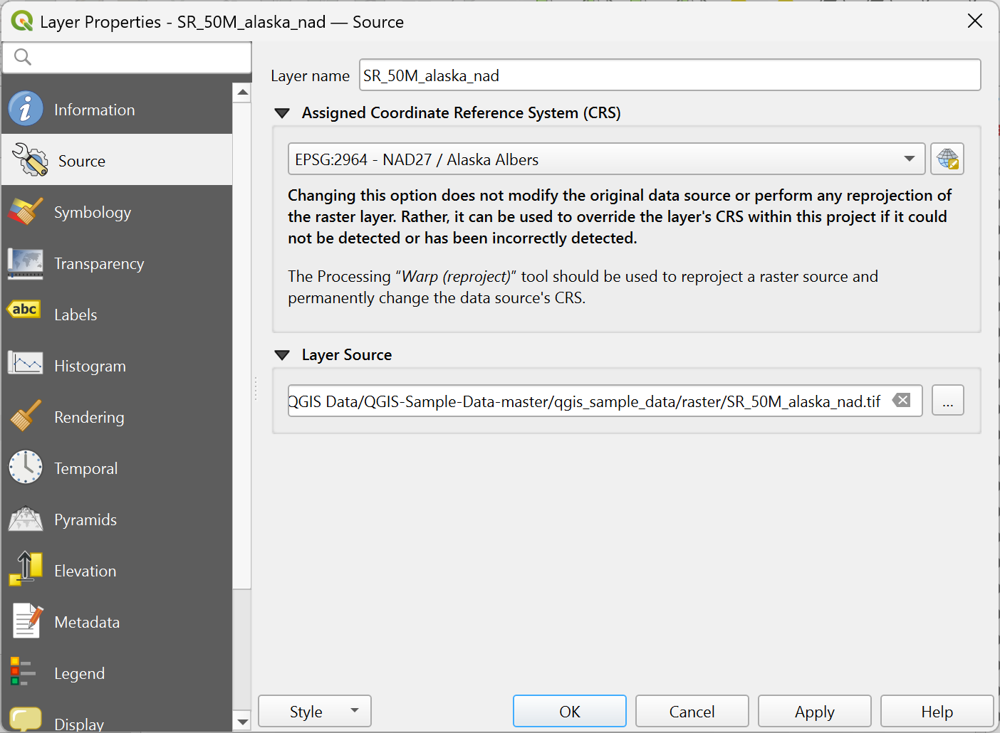
図 13.1 ラスタレイヤプロパティ - ソースダイアログ
13.1.3. シンボロジプロパティ
ラスタレイヤのシンボロジタブは、3つの異なるセクションからなります：
バンドレンダリング ：使用するレンダラーの種類を操作できます
レイヤレンダリング ：レンダリングされるデータに効果を適用します
リサンプリング ：マップ上でのレンダリングを最適化するリサンプリング手法を設定します
13.1.3.1. バンドレンダリング
QGISには数多くの異なる レンダリングタイプ があります。データタイプと強調したい情報に応じてレンダラーを選択してください。
マルチバンドカラー - ファイルに複数のバンドがある場合（例：マルチバンドの衛星画像）
カテゴリ値パレット - インデックス付けされたパレットを持つ単バンドのファイル（例：デジタル地形図）や、ラスタレイヤをレンダリングするためのパレットの一般用途
単バンドグレー - 画像（の1バンド）をグレースケールでレンダリングします。ファイルがマルチバンドではなく、パレットも持たない場合には、QGISはこのレンダラを選択します（例：陰影起伏図など）
単バンド疑似カラー - このレンダラーは連続値パレットやカラーマップのファイルに使用します（例：標高地図など）
Single color - ラスターレイヤを単色で描画します。
陰影図（hillshade） - バンドの一つから陰影図を作成します。
等高線（Contours） - ソースラスタバンドに対してオンザフライで等高線を生成します。
マルチバンドカラー
マルチバンドカラーレンダラーを選択した場合には、画像から選択した3つのバンドがカラー画像の赤、緑、青成分として使用されます。QGISはラスタの各バンドから自動的に 最小 と 最大 の値を取得し、色付けをこれに応じてスケーリングします。 最小/最大値設定 のセクションで値の範囲を制御することができます。
コントラスト は次の値をとります： 「強調しない」、「最小最大範囲に引き伸ばす」、「最小最大範囲に引き伸ばしカット」、「最小値から最大値までの範囲以外は無視」
注釈
コントラスト
GRASSラスタを追加する場合、たとえQGISの一般オプションで他の値に設定したとしても、 コントラスト オプションは常に自動的に 最小最大範囲に引き伸ばす に設定されます。
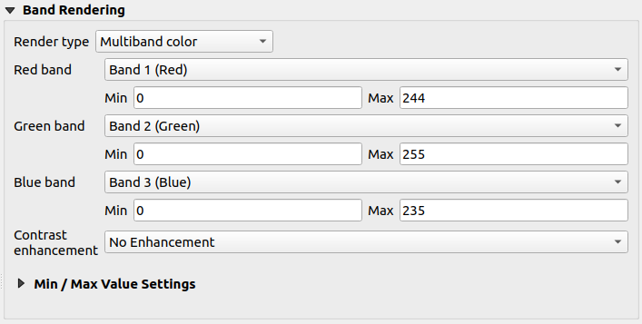
図 13.2 ラスタシンボロジ - マルチバンドカラーレンダリング
Tip
マルチバンドラスタの単バンドを表示する
マルチバンド画像の単バンド（例えば赤）を表示したい場合、緑と青のバンドを 未設定 に設定すればよいと思うかもしれません。しかし、この場合に推奨される方法は、画像のレンダリングタイプを 単バンドグレー に設定し、使用する グレーバンド に赤のバンドを選択することです。
カテゴリ値パレット
これは、各ピクセル値にある特定の色が割り当てられたカラーテーブルを含んだ単バンドファイルに対する標準的なレンダラーオプションです。この場合、パレットは自動的にレンダリングされます。
これはあらゆる種類のラスタバンドに使用することができ、ユニークなラスタ値それぞれに色を割り当てます。
色を変更したい場合には、色をダブルクリックすると 色の選択 ダイアログが表示されます。
色にラベルを割り当てることもできます。このラベルはラスタレイヤの凡例で表示されます。
カラーテーブルの選択した行の上で右クリックすると、以下のコンテキストメニューが表示されます：
選択した行の 色を変更...
選択した行の 不透明度を変更...
選択した行の ラベルを変更...
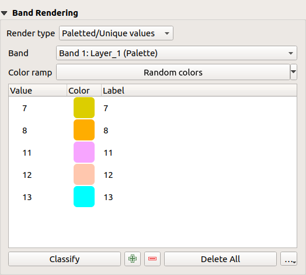
図 13.3 ラスタシンボロジ - カテゴリ値パレットレンダリング
カラーマップの下の右にある ... （ 詳細オプション ）ボタンをクリックして開くと表示されるプルダウンメニューには、カラーマップの読み込み（ ファイルからカラーマップを読み込む... と書き出し（ ファイルへのカラーマップのエクスポート... ）、クラスの読み込み（ レイヤからクラスを読み込む ）があります。
単バンドグレー
このレンダラーは、ただ一つのバンドを グラデーション ：「黒から白」または「白から黒」を使用してレンダリングします。色付けする値の範囲（ 最小値（Min） と 最大値（Max） ）は、 最小/最大値設定 で変更できます。
コントラスト は次の値をとります： 「強調しない」、「最小最大範囲に引き伸ばす」、「最小最大範囲に引き伸ばしカット」、「最小値から最大値までの範囲以外は無視」
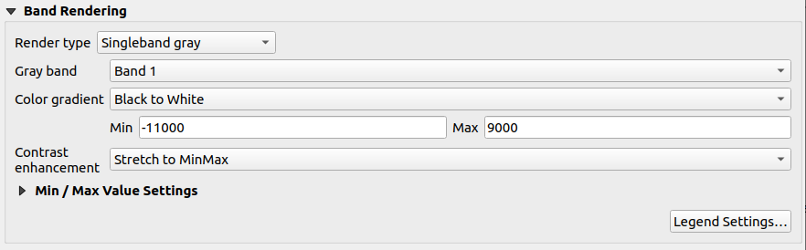
図 13.4 ラスタシンボロジ - 単バンドグレーレンダリング
ピクセルには選択されたカラーグラデーションに基づいた色が割り当てられ、レイヤの凡例（ レイヤ パネルと印刷レイアウトの 凡例アイテム ）は連続カラーランプを使用して表示されます。凡例の設定を調整したい場合には、 凡例の設定... ボタンを押してください。詳細は ラスタの凡例のカスタマイズ を参照してください。
単バンド疑似カラー
これは連続的なパレットを持つ単バンドのファイルに対するレンダラーオプションです。マルチバンドラスタのバンドの一つに対するカラーマップを作成することもできます。
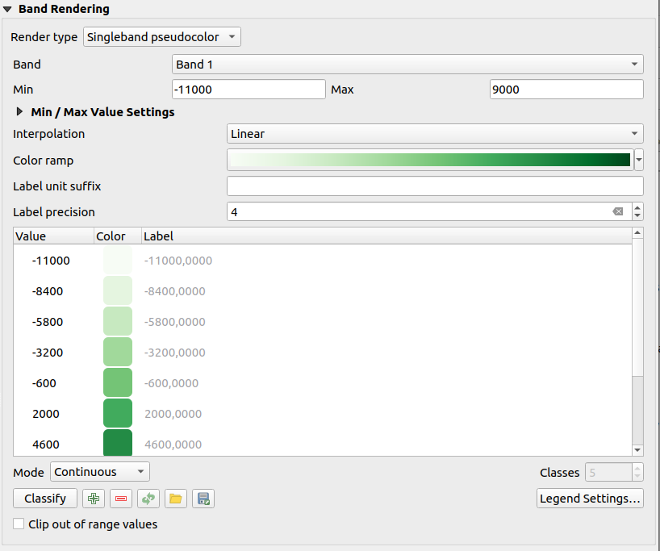
図 13.5 ラスタシンボロジ - 単バンド疑似カラーレンダリング
レイヤの バンド と 値の範囲 を使用して、 値の内挿方法とクラス内のピクセルの表現色の割り当てができます。詳細は カラーランプシェーダの分類 を参照してください。
ピクセルには選択されたカラーランプに基づいた色が割り当てられ、レイヤの凡例（ レイヤ パネルと印刷レイアウトの 凡例アイテム ）は連続カラーランプを使用して表示されます。凡例の設定を調整したり、代わりに個別クラス（と色）を使用した凡例を使いたい場合には、 凡例の設定... ボタンを押してください。詳細は ラスタの凡例のカスタマイズ を参照してください。
単色
このレンダラーを使用すると、ラスターレイヤを Single color で描画できます。このレンダラーは、画素値による色の変化をつけずにラスターレイヤを一様に表示したい場合に便利です。
単色レンダラーは、シングルバンドおよびマルチバンドのラスターレイヤの両方で使用できます。マルチバンドラスタで使用する場合は、どのバンドに単色を適用するかを選択でき、その特定のバンドをレイヤ全体で一様に表示することが可能です。
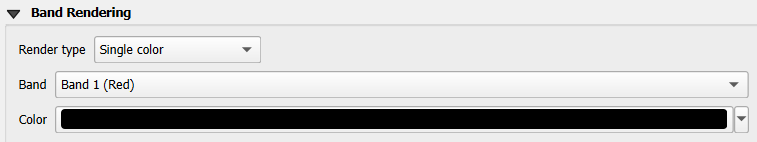
図 13.6 ラスタシンボロジー - 単色レンダリング
陰影図（hillshade）
ラスタレイヤのバンドを陰影でレンダリングします。
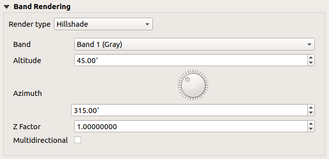
図 13.7 ラスタシンボロジ - 陰影図レンダリング
オプション:
バンド ：使用するラスタのバンド
高度 ：光源の仰角（デフォルトは
45°）方位角（Azimuth） ：光源の方位角（デフォルトは
315°）Z係数 ：ラスタバンドの値のスケーリング係数（デフォルトは
1） 多方向シェーディング ：多方向のシェーディングを利用するかどうかの指定（デフォルトは
多方向シェーディング ：多方向のシェーディングを利用するかどうかの指定（デフォルトは off）
等高線（Contours）
このレンダラーは、ソースラスタバンドからオンザフライで計算された等高線を描画します。
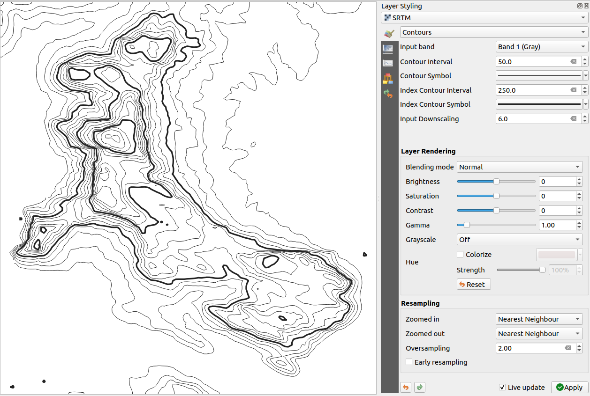
図 13.8 ラスタシンボロジ - 等高線レンダリング
オプション:
入力バンド ：使用するラスタバンド
等高線の間隔 ：連続する2つの等高線の間隔
等高線シンボル ：一般の等高線に適用する シンボル
基準等高線の間隔 ：連続する2つの 基準等高線 の間隔。基準等高線は識別しやすいように目立たせて表示され、他の等高線よりも太い線で描かれ、線に沿って値のラベルが付いていることが一般的です。
基準等高線シンボル ：基準等高線に適用するシンボル
入力値の乗数 ：レンダラーがデータプロバイダへのリクエストをどれだけスケールダウンするかを指定します（デフォルトは
4.0）。例えば、出力ラスタブロックと同じサイズで入力ラスタブロックの等高線を生成した場合、細かすぎる線が生成されるでしょう。この詳細度合いは、ソースラスタの解像度を下げるようにする「入力値の乗数」によって減らすことができます。1000x500のラスタブロックでダウンスケール10の場合、レンダラーはプロバイダに100x50のラスタを要求します。ダウンスケールを大きくすると、等高線がよりシンプルになります（ただし、詳細が失われます）。
最小 / 最大値設定
デフォルトでは、QGISはラスタのバンドの 最小 値と 最大 値を報告します。ごく少数の非常に小さい値や非常に大きい値があると、ラスタのレンダリングに悪影響を及ぼすことがあります。 最小/最大値設定 フレームはレンダリングの制御に役立ちます。
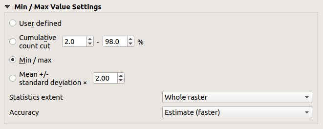
図 13.9 ラスタシンボロジ - 最小 / 最大値設定
利用可能なオプションは次のとおりです。
 ユーザー定義 ：バンドのデフォルトの 最小 値や 最大 値を上書きできます。
ユーザー定義 ：バンドのデフォルトの 最小 値や 最大 値を上書きできます。- 累積範囲 ：外れ値を除外します。標準の値の範囲は
2%から98%の間ですが、手動で調整することもできます。  最小 / 最大 ：イメージバンドの値の範囲全体を使用します。
最小 / 最大 ：イメージバンドの値の範囲全体を使用します。- 平均 +/- 標準偏差 x ：標準偏差の範囲内、もしくは標準偏差の倍数の範囲内の値のみを考慮したカラーテーブルを作成します。これは、ラスタレイヤ内に異常に大きな値を持ったセルが1つ2つあり、これがラスタのレンダリングに悪影響を与える場合において便利です。
バンドの最小値・最大値の計算は以下に基づいて行われます：
集計する範囲 ：これは ラスタ全体 、 現在のキャンバス または 更新されたキャンバス の値をとります。 更新されたキャンバス は、レンダリングに使用する最小値/最大値がキャンバス範囲に応じて変わる（動的引き伸ばし）ことを意味します。
精度 ： 推定値（高速） または 実際の値（低速） のどちらかを指定します。
注釈
一部の設定では、実際の最小値と最大値をウィジェット内に表示するためにレイヤプロパティダイアログの 適用 ボタンを押す必要があります。
カラーランプシェーダの分類
これは、スカラデータセット（ラスタやメッシュのコンター）をその値に基づいて分類し表現するために利用されます。 カラーランプ とクラス数が与えられると、このクラス数に対する中間的なカラーマップエントリが生成されます。値の範囲から補間された値と分類モードに応じた値で各色がマッピングされます。スカラデータセットの要素には、そのクラスに基づいて色が割り当てられます。
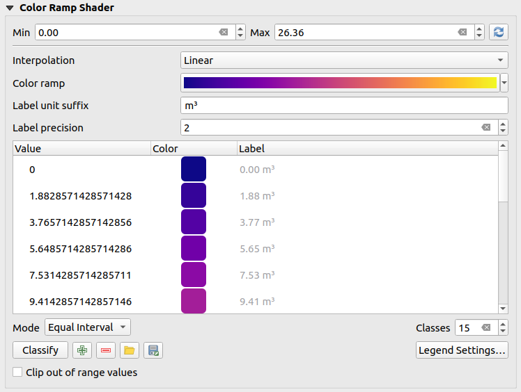
図 13.10 カラーランプシェーダを使用したデータセットのクラス分類
最小値（Min） と 最大値（Max） が定義されている必要があり、これがクラス境界の内挿に使用されます。QGISはデフォルトでデータセットから最小値・最大値を検出しますが、修正することも可能です。
内挿 エントリは、スカラー要素にどのように色に割り当てるかを定義します：
離散値 （
<=シンボルが 値 カラムのヘッダに表示されます）：ラスタの色には、その値以上で最も近いカラーマップのエントリを使用します線形 ：ラスタの色は、ピクセル値の上下のカラーマップエントリから線形に補間されます。これにより、データセットの各値には固有の色が対応します。
正確な （
=シンボルが 値 カラムのヘッダに表示されます）：カラーマップエントリの値に等しい値を持つピクセルだけに色が適用されます。その他の値のピクセルはレンダリングされません。
カラーランプ ウィジェットによって、データセットに割り当てるカラーランプを選択できます。 このウィジェット と同様に、新しいカラーランプを作成したり、現在選択されているカラーランプを編集したり保存したりすることができます。カラーランプの名前は設定に保存されます。
ラベルの単位の接尾辞 は、凡例内で値の後ろにラベルを追加します。また、 ラベルの精度 は表示する小数点以下の桁数を制御します。
分類の モード は、クラス間でどのように値が分布するかを定義できます：
等間隔分類 ： クラス の数を指定すると、全てのクラスの間隔が同じ大きさとなるように値が定義されます。
連続的 ：クラス数と色はカラーランプのグラデーションストップから取得します。値はカラーランプのグラデーションストップの分布に応じて設定されます。
等量分類 ： クラス の数を指定すると、クラスが同じ要素数となるように値が定義されます。これは メッシュレイヤ では利用できません。
次に、 分類 ボタンを押すか、以下の方法でクラスを微調整します：
 手動で値を追加 ボタンはテーブルに値を追加します。
手動で値を追加 ボタンはテーブルに値を追加します。 選択した行を削除 ボタンはテーブルから選択した値を削除します。
選択した行を削除 ボタンはテーブルから選択した値を削除します。値（Value） カラムをダブルクリックするとクラス値を編集できます。
色 カラムをダブルクリックすると 色の選択 ダイアログが開き、値に適用する色を選択できます。
ラベル カラムをダブルクリックするとクラスのラベルを編集できます。ただし、これは地物情報表示ツールを使用した場合には表示されません。
色テーブルの選択した行で右クリックすると、選択行に対する 色を変更... と 不透明度を変更... のコンテキストメニューが表示されます。
 ファイルからカラーマップをロード ボタンや
ファイルからカラーマップをロード ボタンや  カラーマップをファイルにエクスポート ボタンを使用して、既存のカラーテーブルを読み込んだり、後で使用するためにカラーテーブルを保存したりできます。
カラーマップをファイルにエクスポート ボタンを使用して、既存のカラーテーブルを読み込んだり、後で使用するためにカラーテーブルを保存したりできます。内挿 で「線形」オプションを選択した場合は、以下の設定もできます：
- 範囲外の値を無視 ：デフォルトでは、線形内挿は 最小値 よりも小さいデータセットの値を最初のクラスの色（同様に 最大値 よりも大きな値を最後のクラスの色）に割り当てます。最小値・最大値より外の値をレンダリングしたくない場合には、この設定にチェックを入れてください。
凡例の設定... ： レイヤ パネルや印刷レイアウトの 凡例アイテム の表示のためのオプションです。詳細は ラスタの凡例のカスタマイズ を参照してください。
ラスタの凡例のカスタマイズ
ラスタレイヤやメッシュレイヤにカラーランプを適用する場合、凡例をクラス分けして表示したいことがあります。デフォルトでは、QGISは レイヤ パネルや印刷レイアウトの 凡例アイテム には最大値・最小値付きの連続的なカラーランプを表示します。この凡例は、クラス分類ウィジェットの 凡例の設定... ボタンを使用してカスタマイズすることができます。
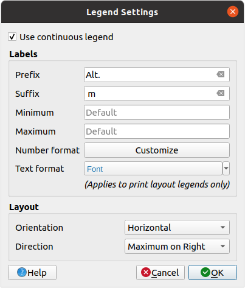
図 13.11 ラスタの凡例の修正
このダイアログでは、 表示に連動する凡例を使用する かどうかを設定できます。チェックを外すと、凡例はさまざまな階級に対応して適用されるバラバラの色で表示されます。このオプションは、 単バンドグレー シンボロジのラスタでは利用できません。
表示に連動する凡例を使用する にチェックを入れると、凡例のラベル、レイアウトのプロパティの両方を設定できます。
ラベル
レイアウト
凡例カラーランプの 方向 の設定： 垂直 または 水平
上記の方向に応じた、値の 方向 の設定
方向が垂直の場合には、 上が最大 または 上が最小
方向が水平の場合には、 右が最大 または 右が最小
13.1.3.2. レイヤレンダリング
レイヤのバンドに適用するシンボロジタイプを設定できたら、ラスタファイル全体に適用される特別なレンダリング効果を与えましょう。
混合モードのいずれかを使用する（ 混合モード 参照）
色の 輝度 、 彩度 、 ガンマ 、 コントラスト をカスタマイズする
- カラーを反転 を使用して、レイヤを反対色でレンダリングする。例えば、OpenStreetMapのタイルをダークモードにさっと切り替えるのに便利です。
レイヤを グレースケール に変換する。オプションには「明度を使用」、「彩度を使用」、「平均を使用」があります。
着色 を使用して、カラーテーブルの 色相 の 強調 を調整する
リセット ボタンを押すと、レイヤレンダリングのカスタム変更をすべて削除します。
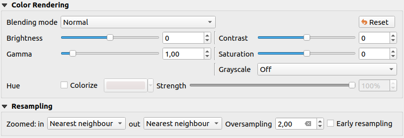
図 13.12 ラスタシンボロジ - レイヤレンダリング設定およびリサンプリング設定
13.1.3.3. リサンプリング
リサンプリング オプションは、画像の拡大・縮小時に影響を与えます。リサンプリングモードは地図の見た目を最適化することができます。これは、幾何学的変換によって新しいグレー値行列を計算します。
「最近傍（Nearest neighbour）」法を適用する場合、地図を拡大していくとピクセル化された構造となることがあります。このような見た目は、「バイリニア（Bilinear）（2x2カーネル）」法または「キュービック（Cubic）（4x4カーネル）」法を使うと改善できます。これらの手法はシャープな縁をぼかして、結果として滑らかな画像が得られます。この手法は、例えばデジタル地形図のラスタ地図などに適用すると良いでしょう。
Early resampling: ソースの解像度がわかっているプロバイダレベルでラスターレンダリングを計算することができ、QGISカスタムスタイルでのレンダリングでより良いズームが確保されます。 interpretation method を使用して読み込まれたタイルラスターにとても便利です。
13.1.4. 透明度プロパティ
QGISはラスタレイヤの |transparencey| Transparency レベルを設定する機能を提供しています。
Use the Global opacity slider to set to what extent the underlying layers (if any) should be visible through the current raster layer. This is very useful if you overlay raster layers (e.g., a shaded relief map overlaid by a classified raster map). This will make the look of the map more three dimensional. The opacity of the raster can be data-defined, and vary e.g. depending on the visibility of another layer, by temporal variables, on different pages of an atlas, ...
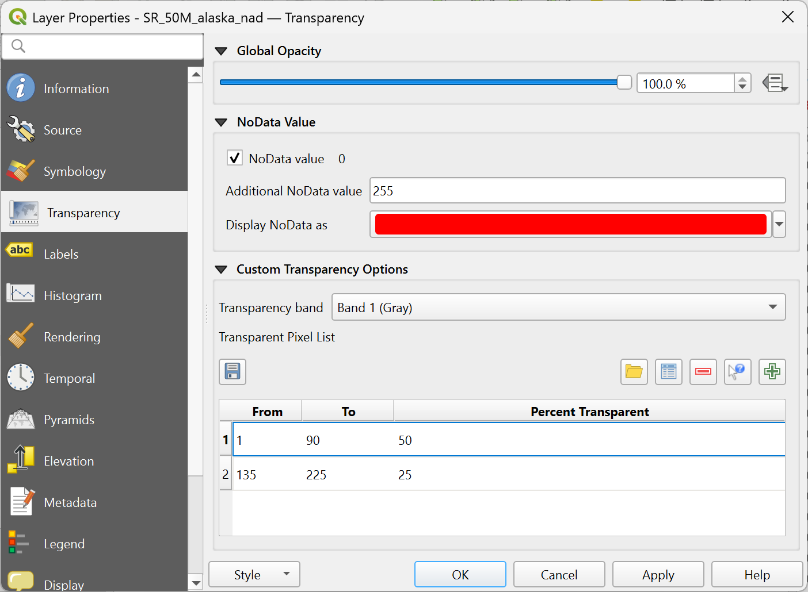
図 13.13 ラスタの「透過性」タブ
データなし（nodata）とする値 には、QGISが取得した元のソースのnodata値が（もし定義されていれば）表示されます。この値は、レンダリング時にデータなしと見なされます。さらに、 追加のnodata値 として扱われるラスタ値を入力することもできます。 no dataの代替表示 のカラーセレクタを使用すると、デフォルトの透明なレンダリングの代わりに、自分で設定した色をnodata値のピクセルに適用できます。
さらに自由度の高い透過性のカスタマイズが カスタム透過オプション のセクションで利用可能です：
透過設定するバンド を使用して、バンド全体に不透明度を適用します。
透過させるピクセルのリストを対応する透過率とともに指定します。
- 手動で値を追加 ボタンをクリックします。新しい行がピクセルリストに表示されます。
シングルバンドを用いたシンボロジー (e.g. DEMs) では、From と To の値を入力し、適用する 透過率 Percent Transparen を調整します。
マルチバンドを用いたシンボロジー (e.g. RGB画像) では、ピクセルの 赤、緑、青 の値を入力し、適用する 透過率 を調整します。QGIS では透過設定時にピクセル値の 許容値 をサポートしています。これにより、指定したRGB値に近い色のピクセルも透過させることが可能です。この機能はマルチバンドラスタにのみ適用される点に注意してください。
この代わりに、 画面から値を追加 ボタンを使用して、ラスタから直接ピクセル値を取得することもできます。透過率の値は入力してください。
この手順を繰り返し、さらに多くの値のカスタム透過率を調整します。
適用 ボタンを押して、地図を確認してみましょう。
このように、カスタム透明度を設定するのはとても簡単ですが、かなりの手間がかかります。そのため、
 ファイルにエクスポート ボタンを使用して、透明度リストをファイルに保存できます。 ファイルからインポート ボタンは、透明度の設定をロードして現在のラスタレイヤに適用します。
ファイルにエクスポート ボタンを使用して、透明度リストをファイルに保存できます。 ファイルからインポート ボタンは、透明度の設定をロードして現在のラスタレイヤに適用します。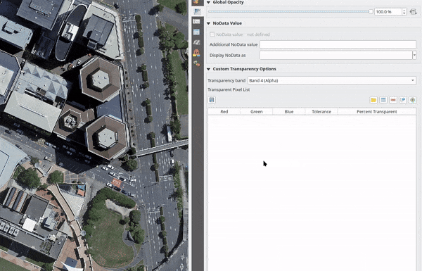
図 13.14 マルチバンドラスタでの許容値の使用
13.1.5. ラベルプロパティ
The  Labels properties provides you with all the needed
and appropriate capabilities to configure smart labeling on raster layers.
This dialog can also be accessed from the Layer Styling panel.
Labels properties provides you with all the needed
and appropriate capabilities to configure smart labeling on raster layers.
This dialog can also be accessed from the Layer Styling panel.
ダイアログの上部には次のものがあります:
そのアクティブレイヤに適したラベル付けの方法を選ぶためのコンボボックス
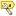
プロジェクトのラベル付けルールの設定 ボタン: プロジェクト内のレイヤ間でラベルと地物との相互作用を制御します。詳細については プロジェクトのラベル付けルールの設定 を参照してください。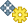
自動配置（全レイヤに適用） ボタン：ラベルの配置と衝突解決に関する一般的なプロパティを設定します。詳細については 自動配置エンジンの設定 を参照してください。
最初のステップは、ラベル付けの手法をドロップダウンリストから選択することです。利用可能な手法は、以下のとおりです：
 なし ：デフォルト値で、レイヤにラベルを表示しません。
なし ：デフォルト値で、レイヤにラベルを表示しません。- Label with pixel values: Show labels on the map using a band.
Using the Label with pixel values option, the following dialog opens.
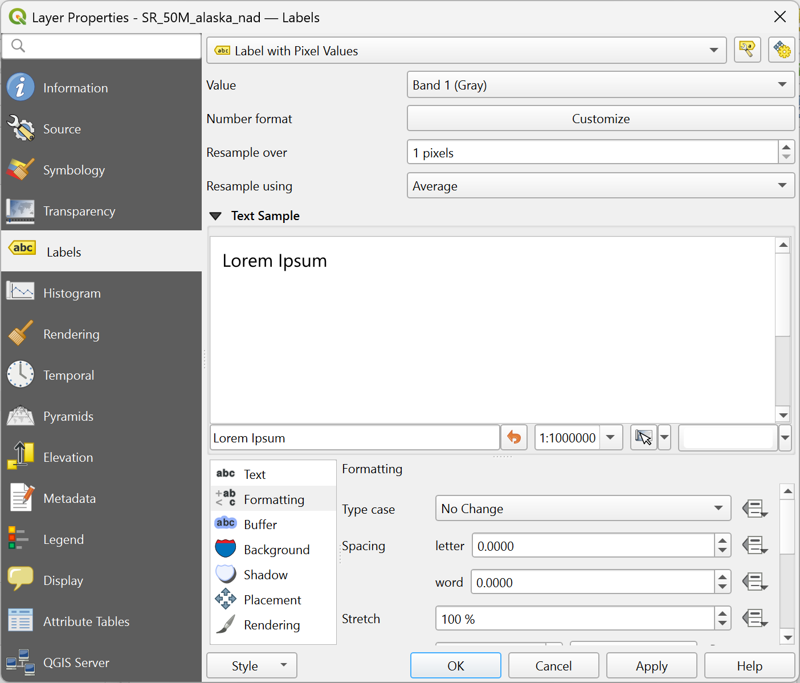
図 13.15 Raster layer labeling settings
At the top of the dialog:
A Value drop-down list allows you to select the band to take the values from
Press Customize to configure a proper number formatting
By default, the displayed value represents individual pixel band value. With Resample over, you can compute the value from the neighbouring pixels (setting
2means2*2=4pixels) using a statistical method set in the Resample using widget.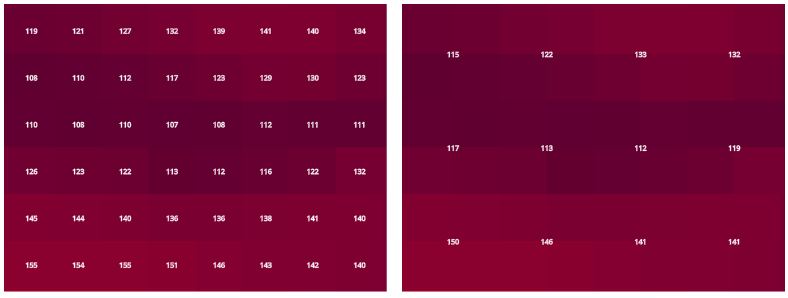
図 13.16 Pixels labeled using various resampling options
以下は、様々なタブの下でラベルをカスタマイズするために表示されるオプションです。


{kind=link}
{kind=link}
{kind=link}
{kind=link}
{kind=link}
{kind=link}
{kind=link}
{kind=link}
{kind=link}
各プロパティの設定方法は、 ラベルの設定 にあります。
13.1.6. ヒストグラムプロパティ
 ヒストグラム タブでは、ラスタ内の値の分布を確認できます。ヒストグラムは、 ヒストグラムの計算 ボタンを押すと生成されます。既存のバンドは全て一緒に表示されます。ヒストグラムを画像として保存するには、 ボタンを使用します。
ヒストグラム タブでは、ラスタ内の値の分布を確認できます。ヒストグラムは、 ヒストグラムの計算 ボタンを押すと生成されます。既存のバンドは全て一緒に表示されます。ヒストグラムを画像として保存するには、 ボタンを使用します。
ヒストグラムの下部では、ドロップダウンメニューのラスタバンドを選択して、 最小/最大のスタイルを設定 することができます。  設定/アクション ドロップダウンメニューには、ヒストグラムをカスタマイズするための高度なオプションがあります。
設定/アクション ドロップダウンメニューには、ヒストグラムをカスタマイズするための高度なオプションがあります。
可視性 オプションを使用すると、個別バンドごとにヒストグラムを表示できます。これには
選択したバンドを表示する オプションを選択してください。最小/最大オプション では、 「最小/最大マーカーを常時表示」、「最小/最大にズーム」、「最小/最大にスタイルを更新」の設定ができます。
アクション オプションでは、バンドの最大・最小値を変更した後で「リセット」や「ヒストグラムを再計算」することができます。
{kind=link}
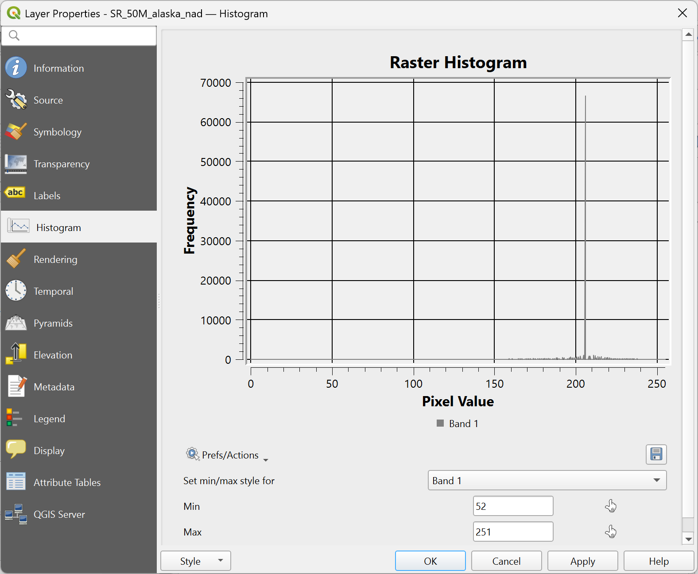
図 13.17 ラスタの「ヒストグラム」タブ
13.1.7. レンダリングプロパティ
 レンダリング タブでは、以下の設定が可能です：
レンダリング タブでは、以下の設定が可能です：
レイヤの 縮尺に応じた表示設定 ： 最大縮尺（この値を含む） と 最小縮尺（この値を含まない） を設定して、レイヤが表示される縮尺の範囲を定義できます。この範囲の外では非表示になります。
 現在のキャンバスの縮尺に設定 ボタンを使用すると、現在のマップキャンバスの縮尺を境界値として使用できます。詳細については、 表示縮尺セレクタ を参照してください。
現在のキャンバスの縮尺に設定 ボタンを使用すると、現在のマップキャンバスの縮尺を境界値として使用できます。詳細については、 表示縮尺セレクタ を参照してください。注釈
レイヤの縮尺に応じた表示は、レイヤ パネルからも有効にすることもできます: レイヤを右クリックし、コンテキストメニューから レイヤの縮尺表示を設定 を選択します。
- レイヤ更新間隔: レイヤを定期的にリフレッシュするかどうか、またその頻度を制御します。利用可能な Configuration オプションは次のとおりです:
データの再読み込み: レイヤが完全にリフレッシュされます。キャッシュされたデータは破棄され、プロバイダから再取得されます。このモードでは、地図のリフレッシュが遅くなる可能性があります。
レイヤのみ再描画: このモードはアニメーションや、レイヤのスタイルが一定間隔で更新される場合に便利です。複数のレイヤに自動更新間隔が設定されている場合、複数回更新されないように、キャンバスの更新は延期されます。
また、連続したリフレッシュの間の 間隔（秒） を設定することもできます。
{kind=link}
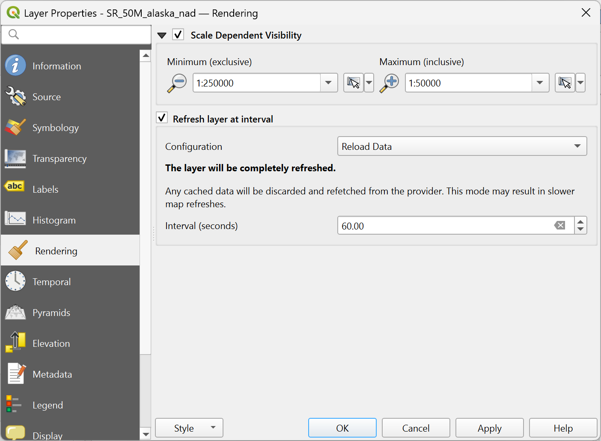
図 13.18 ラスタのレンダリングプロパティ
13.1.8. 時系列プロパティ
 時系列 タブは、時間経過に伴うレイヤのレンダリングを制御するオプションを提供します。このような動的なレンダリングには、マップキャンバスで 時系列ナビ を有効にする必要があります。
時系列 タブは、時間経過に伴うレイヤのレンダリングを制御するオプションを提供します。このような動的なレンダリングには、マップキャンバスで 時系列ナビ を有効にする必要があります。
{kind=link}
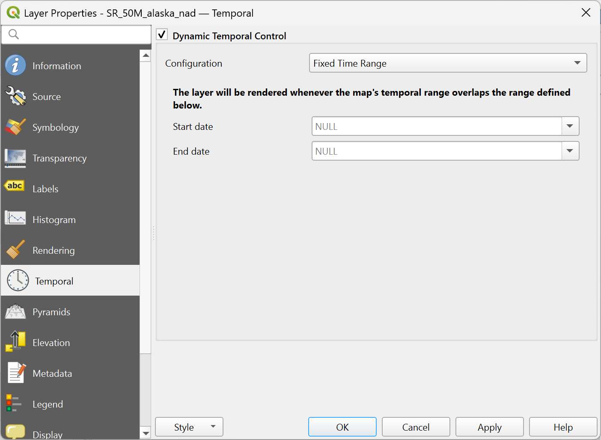
図 13.19 ラスタの時系列プロパティ
動的時系列コントロール オプションにチェックを入れ、レイヤの再描画をどのようにするか設定します：
Automatic: the rendering is controlled by the underlying data provider if it supports temporal data handling. E.g. this can be used with WMS-T layers or PostgreSQL rasters.
Fixed Date/Time: only show the raster layer at a single, specific date/time. This avoids having to enter the same value for both the start and end of the temporal range.
Fixed time range: only show the raster layer if the animation time is within a Start date and End date range.
バンドごとの固定時間範囲: 現在のアニメーション時間が、そのバンドの 開始 と 終了 の日付範囲内にあるときのみ、そのバンドを表示します。このオプションでは、各バンドの時間範囲を手動で設定することも、
 ボタンを使用して日時値を自動生成することもでき、詳細な時系列解析や可視化を可能にします。このモードは、各バンドが特定の期間に対応しているNetCDFファイルなどのラスターレイヤを扱う際に特に有用です。
ボタンを使用して日時値を自動生成することもでき、詳細な時系列解析や可視化を可能にします。このモードは、各バンドが特定の期間に対応しているNetCDFファイルなどのラスターレイヤを扱う際に特に有用です。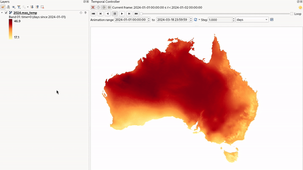
図 13.20 バンドごとの固定時間範囲モードの使用例
時系列値を表す: ラスターレイヤの各ピクセルを日時値として解釈します。この時系列モードが有効な場合、レンダーコンテキストで指定された時系列範囲に該当しないピクセルは非表示となり、時系列的に関連するデータのみが表示されます。このモードは以下の用途に有効です:
森林伐採のパターンを観察するなど、土地利用の変化を分析すること。
異なる時点の水域範囲を比較して洪水を調査すること。
地形解析における移動コストの評価、例えば GRASS GIS の r.walk ツールを使ってランドスケープ全体の移動コストを計算すること。
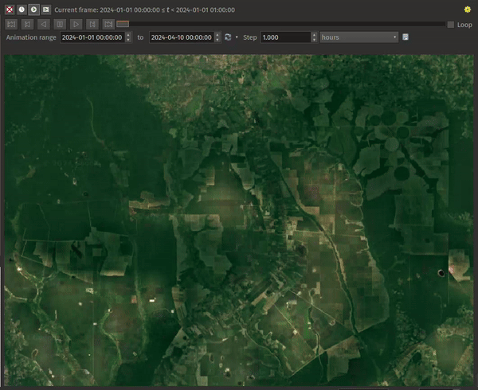
図 13.21 時系列値を表すモードの適用例 ‐ GLAD 森林伐採アラートの分析
レイヤのみ再描画 ：レイヤは新しいアニメーションフレーム毎に再描画されます。これは、レンダラーの設定に時間ベースの式の値を使用しているレイヤ（例：レンダラーの透明度をデータによって定義することで、ラスタレイヤをフェードイン/アウトする）に便利です。
{kind=link}
{kind=link}
13.1.9. ピラミッドプロパティ
QGISで高解像度のラスタレイヤを使用すると、操作が遅くなることがあります。データの低解像度のコピー（ピラミッド）を作成することで、QGISはズームレベルに応じて使用する最適な解像度を選択するため、パフォーマンスが大幅に向上します。
ピラミッドを作成するには、オリジナル画像があるディレクトリへの書き込み権限を持っている必要があります。
解像度 リストからクリックしてピラミッドレベルを作成したい解像度を選択します。
全体図の形式 ドロップダウンメニューから 内部（可能であれば） を選択すると、QGISは内部的にピラミッドを構築しようとします。
注釈
ピラミッドの作成は元のデータファイルを変更する可能性があり、一度作成したピラミッドは削除することはできませんのでご注意ください。「ピラミッドのない」ラスタをとっておきたい場合には、ピラミッドを作成する前にバックアップコピーを作成してください。
外部 や 外部（Erdas Imagine） を選択した場合には、ピラミッドは元のラスタと同じ場所に、同じ名前の .ovr 拡張子で作成されます。
ピラミッド作成にはいくつかの リサンプリング方法 が使用可能です：
最近傍
平均
ガウス
キュービック
キュービック・スプライン
ランチョス法
モード
なし
最後に ピラミッドの構築 ボタンを押すと、処理を開始します。
{kind=link}
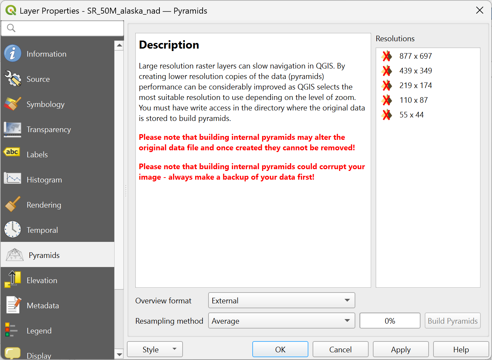
図 13.22 ラスタの「ピラミッド」タブ
13.1.10. 標高プロパティ
 の 標高 タブでは、3D map view 内でのレイヤの標高プロパティおよび profile tool charts における表示を制御するオプションを提供します。具体的には、レイヤに標高データが含まれていない場合はこの設定を 無効化 することができ、または以下の項目を設定できます:
の 標高 タブでは、3D map view 内でのレイヤの標高プロパティおよび profile tool charts における表示を制御するオプションを提供します。具体的には、レイヤに標高データが含まれていない場合はこの設定を 無効化 することができ、または以下の項目を設定できます:
{kind=link}
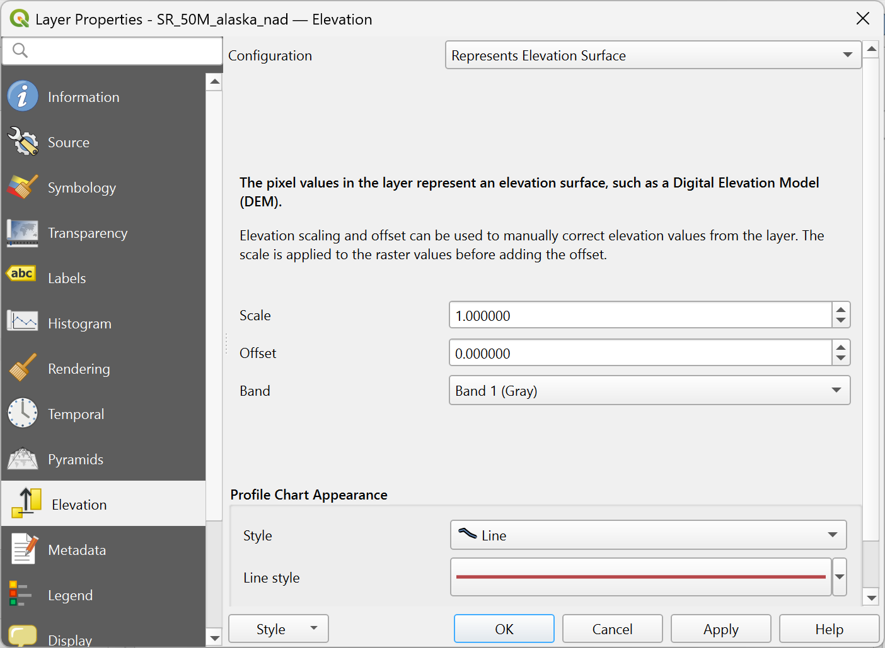
図 13.23 ラスタ標高プロパティ
Represents Elevation Surface: ラスタレイヤが高さの表面 (例 DEM) を表し、ピクセル値を標高として解釈するかどうかを指定します。ラスタを elevation profile view に表示したい場合はこのオプションを選択してください。また、値を取得する Band の指定が必要で、 Scale および Offset を適用することも可能です。
Fixed Elevation Range: ラスタレイヤ (または選択したラスタバンド) に固定の標高範囲を関連付けることができます。このモードは、レイヤに単一の固定標高、または標高値の範囲 (スライス) がある場合に使用できます。範囲が指定されている場合、ピクセルはこの範囲に沿って押し出されて表示されます。レイヤに対して Lower および Upper の標高範囲の値を設定でき、さらに下限・上限の Limits を含むか含まないか (inclusive または exclusive) を指定することが可能です。
Fixed Elevation Range Per Band: ラスタ内の各バンドに固定の標高範囲を関連付けることができます。これは、NetCDF ファイルのように標高関連データをバンド内に持つデータソース向けに設計されています。例えば、異なる海洋深度での温度データを持つラスタの場合などです。レンダリング時には、一致する最上位のバンドが選択され、そのレイヤのデータとして使用されます。この機能は、ラスタバンドごとの下限値・上限値を持つユーザー編集可能なテーブルとして提供されます。ユーザーは下限値・上限値を手動で入力することも、
Expression を使用してすべてのバンド値を式に基づいて自動入力することも可能です。式による自動入力では、バンド名から有用な情報を抽出する式を設計することができます。例えば、"Band 001: depth=-5500 (meters)" のようなバンド名から深度の値を抽出することが可能です。Dynamic Elevation Range Per Band: This mode calculates elevation ranges for raster bands dynamically using QGIS expressions. It's ideal for datasets where elevation values follow a consistent pattern across bands (like equally spaced vertical layers), eliminating the need to manually assign fixed elevations. Instead of entering individual values for each band, you define expressions for the Lower and Upper elevation bounds. These expressions can use variables like
@band,@band_name, or@band_descriptionautomatically computing the elevation range based on each band's properties.断面図の外観: 断面図にあるメッシュ要素の標高のレンダリングを制御します。断面図の スタイル は次のように設定できます:
13.1.11. メタデータプロパティ
 メタデータ タブには、レイヤに関するメタデータレポートの作成・編集オプションがあります。詳細は メタデータ を参照してください。
メタデータ タブには、レイヤに関するメタデータレポートの作成・編集オプションがあります。詳細は メタデータ を参照してください。
{kind=link}
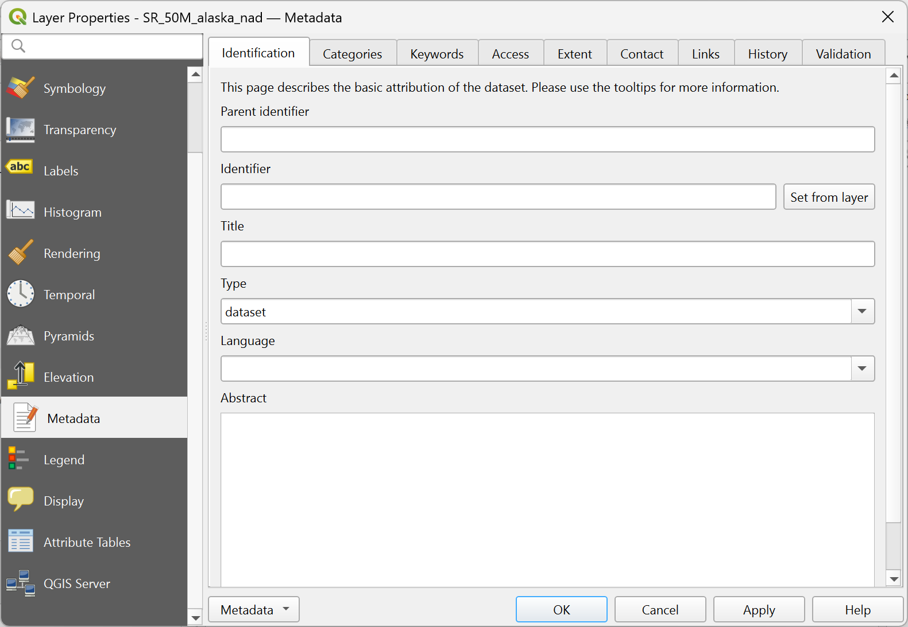
図 13.24 ラスタの「メタデータ」タブ
13.1.12. 凡例プロパティ
 凡例 タブでは、 レイヤパネル や 印刷レイアウトの凡例 に関する高度な設定ができます。これらのオプションには以下のものがあります：
凡例 タブでは、 レイヤパネル や 印刷レイアウトの凡例 に関する高度な設定ができます。これらのオプションには以下のものがあります：
レイヤに適用しているシンボロジにもよりますが、凡例に複数のエントリが表示されることで、必ずしも読みやすく便利な表示になるとは限りません。 凡例の枠の画像 ` で代わりとなる :ref:`select an image <embedded_file_selector> を行うことができ、 レイヤ パネルや印刷レイアウトの凡例の両者で表示されます。
- 凡例の埋め込みウィジェット は、レイヤパネル内のレイヤツリーに埋め込み可能なウィジェットのリストです。このアイディアは、レイヤで頻繁に使用するいくつかのアクション（不透明度の設定、フィルタ、選択、スタイルなど）に簡単にアクセスするための方法を提供することです。
デフォルトではQGISは不透明度ウィジェットを提供していますが、これは独自ウィジェットを登録するプラグインによって拡張することが可能で、管理するレイヤにカスタムアクションを割り当てられます。
{kind=link}
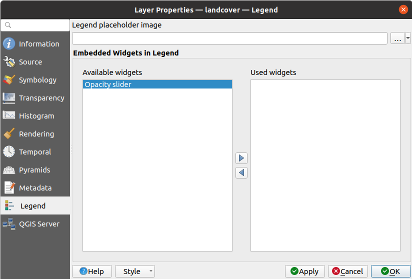
図 13.25 ラスタの「凡例」タブ
13.1.13. 表示名プロパティ
表示 タブでは、ピクセルの識別に使用するHTML地図Tipの設定ができます:
- Tipsを有効化 は、そのレイヤの地図のTipsを表示するかどうかを制御します。
HTML Map Tip は、QGIS の式と HTML のスタイル・タグ (複数行、フォント、画像、ハイパーリンク、表など) を組み合わせてマップチップを作成できる、高機能な HTML テキストエディタを提供します。コードサンプルの結果は Preview フレームで確認できます。また、Insert/Edit Expression ボタンを使用して、既存の式を選択・編集することも可能です。
Expressions ダイアログ内で、Rasters グループ内にある式や
@layer_cursor_point変数を探すことができます。注釈
Insert/Edit Expression ボタンの動作 を 理解する*
式 ("[%" と "%]" で囲まれた部分) の中でテキストを選択した場合、またはテキストを選択していなくてもカーソルが式の中にある場合は、その式全体が自動的に選択されて編集できるようになります。カーソルや選択したテキストが式の外にある場合は、ダイアログはその選択範囲で開きます。
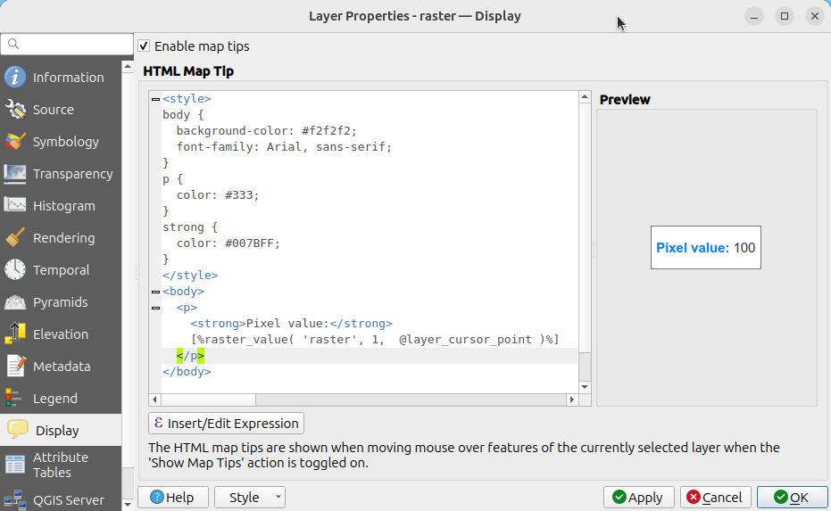
図 13.26 ラスタレイヤの地図のTips
地図のTipsを表示するには:
メニューオプション を選択するか、 属性ツールバー の
 地図のTipsを表示 アイコンをクリックします。
地図のTipsを表示 アイコンをクリックします。対象としているレイヤがアクティブで、
Tipsを有効化 プロパティがチェックされていることを確かめます。ピクセルの上に移動すると、対応する情報が上に表示されます。
地図のTipsはクロスレイヤ機能で、一度有効にすると、オフに切り替えるまで、プロジェクト内の地図のTipsが有効なレイヤ全てに適用されます。
13.1.14. QGISサーバープロパティ
 QGISサーバー タブでは、 QGISサーバー で公開されるデータの設定を行うことができます。設定内容は以下の通りです：
QGISサーバー タブでは、 QGISサーバー で公開されるデータの設定を行うことができます。設定内容は以下の通りです：
Description: provides information to describe the data, such as Short name, Title, Abstract, a Keyword list, and a Data URL whose Format can be in
text/html,text/plainorapplication/pdf.帰属: データの提供者を特定するための タイトル と URL
メタデータURL:
FGDCまたはTC211データ型 で、text/plainまたはtext/xml形式 であるメタデータの URL 一覧凡例URL: 凡例の URL で、
image/pngまたはimage/jpeg形式 のいずれか
注釈
公開したいラスターレイヤーが既にWebサービスで提供されている場合、さらに properties を設定することができます。
{kind=link}
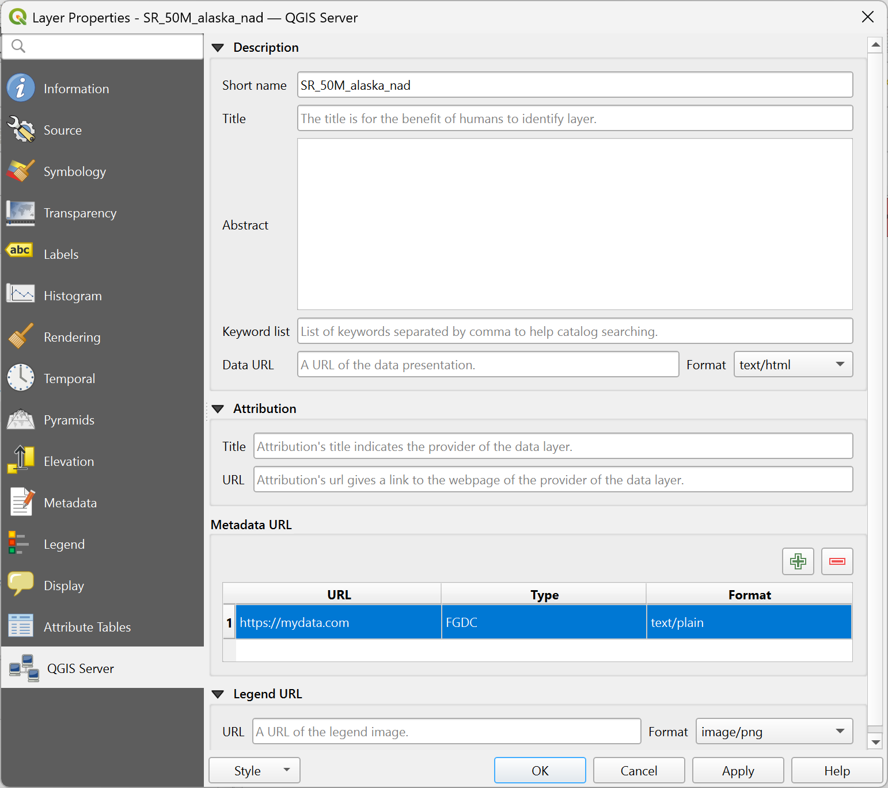
図 13.27 ラスタプロパティの「QGISサーバー」タブ
13.1.15. Attribute Tables
Similar to vector layers, raster layers in QGIS can have associated Raster Attribute Tables (RATs) that store additional information about raster pixel values.
A Raster Attribute Table links raster values (or value ranges) to descriptive attributes such as class names, pixel counts, and colors. RATs are commonly used for classified rasters, color tables, and histogram information, helping QGIS interpret how raster values should be displayed and classified.
The Attribute Tables tab allows you to view and edit raster attribute data. To access the attribute table of a raster layer, right-click the layer in the layers panel, open Properties... and select Attribute Tables.
{kind=link}
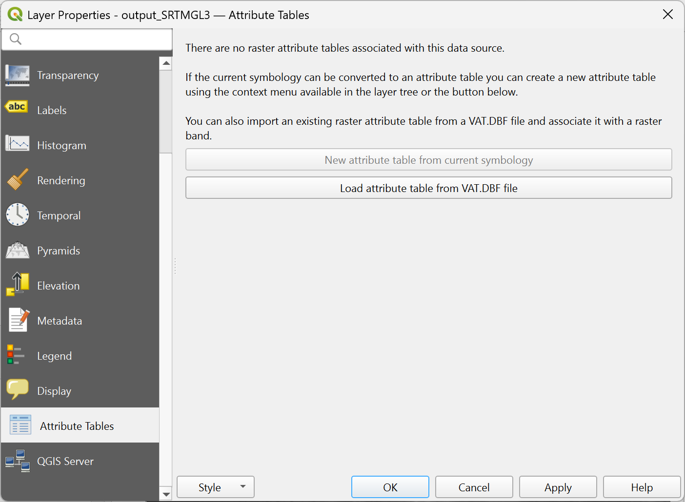
図 13.28 Accessing the raster attribute table
When opening the Attribute Tables for a raster layer that does not have an associated Raster Attribute Table, QGIS displays a notice informing that no attribute table is currently linked to the data source. In this state, the interface provides two options to define and associate a new attribute table:
New attribute table from current symbology: will appear if your raster layer has a classified symbology applied. Otherwise, this option is disabled. Applying classified symbology also triggers an option in the layer context menu to
 Create Raster Attribute Table.
Click this button and set the following options in the New Raster Attribute Table dialog.
Create Raster Attribute Table.
Click this button and set the following options in the New Raster Attribute Table dialog.Managed by the data provider: the attribute table will be saved and managed by the data provider (if supported), overwriting any existing table for the raster band used by the current style. Depending on the data provider, the attribute table will be embedded in the main raster file or saved into a sidecar file managed by the data provider.
Sidecar VAT.DBF file: saves the attribute table into a sidecar VAT.DBF file. The resulting file will not be associated with any particular band.
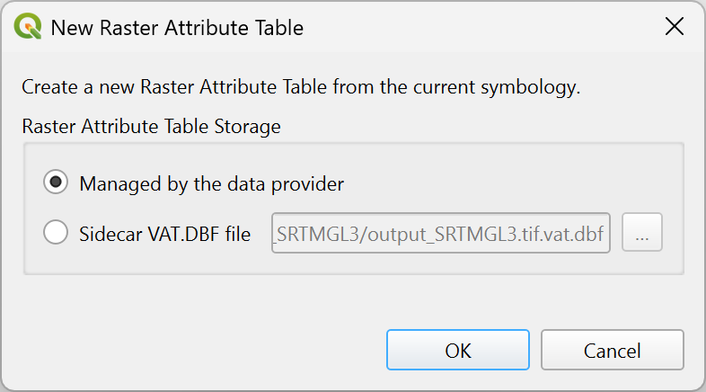
図 13.29 Create new attribute table from current symbology
Load attribute table from VAT.DBF file: retrieves the attribute table from an external DBF file. Load Raster Attribute Table dialog will appear to let you browse and select the DBF file and associate it with the raster band. The action also can be done by right-clicking the raster layer in the layers panel and selecting
 Load Raster Attribute Table from VAT.DBF.
Open the newly loaded attribute table allows you to
directly open the attribute table editor after loading the table.
Load Raster Attribute Table from VAT.DBF.
Open the newly loaded attribute table allows you to
directly open the attribute table editor after loading the table.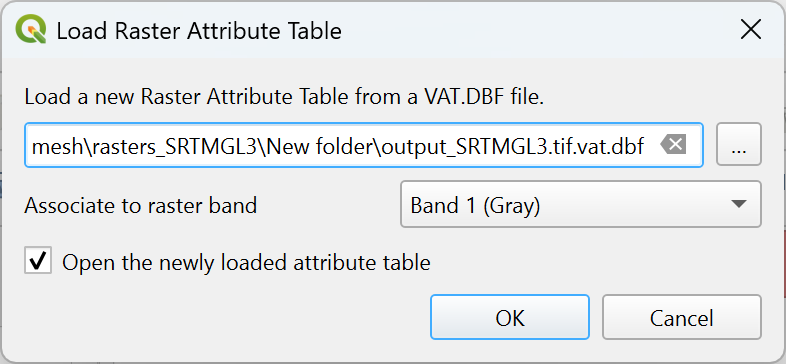
図 13.30 Load attribute table from VAT.DBF file
{kind=link}
{kind=link}
13.1.15.1. Editing raster attribute tables
When set, a raster attribute table can be accessed from the Attribute tables tab of the layer properties dialog or by selecting Open raster attribute table from the layer contextual menu in Layers panel. This dialog shows a table whose rows correspond to the different pixel values or value ranges classified in a given band of the raster layer. Depending on the type of classification, a row is described by:
for an exact values classification (e.g., paletted/unique values): the band name and the applied Color. Additional fields of the Red, Green, Blue and Opacity of the color are displayed.
for range values classification (e.g., singleband pseudocolor): the range of values defined by their Min, Max, the associated label (Class) and color ramp interpolated over the values (Color). Additional fields of the minimum and maximum of Red, Green, Blue and Opacity of the color ramp are displayed.
You can also customize the raster attribute table by adding new fields for classification and group different value ranges accordingly, modifying value ranges and their associated colors or labels, adding new rows, ... The new attribute table can be used to update the current layer symbology.
{kind=link}
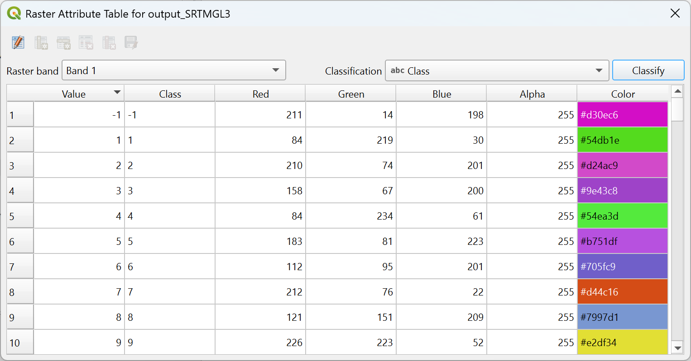
図 13.31 Raster Attribute Table
At the top of the dialog, a set of tools allows to edit and save changes to the attribute table:
 Edit Attribute Table turns the table into edit mode.
If no specific row or field is selected, only the
Edit Attribute Table turns the table into edit mode.
If no specific row or field is selected, only the  Add Column… option is available.
Add Column… option is available.- Add Column... opens the Add Column dialog to add a new
column to the raster attribute table. The dialog lets you define:
Column Type, which can be:
- Standard column
- Color RGBA
- Color ramp (RGBA minimum and RGBA maximum)
Column Definition, including:
Name of the column (mandatory)
Usage, which can be:
Pixel Count: stores the number of pixels belonging to a given value or value range.
Generic: general-purpose column with no predefined meaning.
Name: stores the class name or label associated with a raster value or range.
Data type, which can be:
String
Integer
Long Integer
Double
Insertion point, defining whether the new column is inserted
Before or After
a selected existing column.
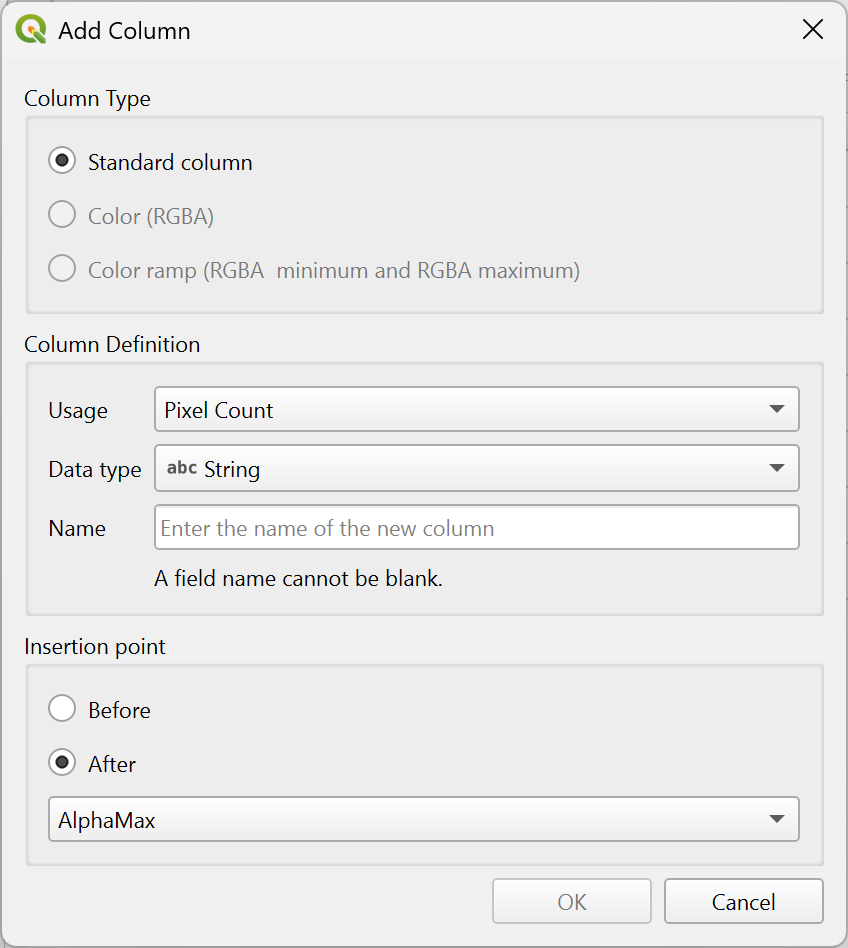
図 13.32 Add Column dialog
 Add Row... opens the Add Row dialog to add a new row
to the raster attribute table. Choose the Insertion point as Before current row
or After current row.
Add Row... opens the Add Row dialog to add a new row
to the raster attribute table. Choose the Insertion point as Before current row
or After current row.Remove Row removes the selected row from the raster attribute table.
 Remove Column removes the selected column from the raster attribute table.
Remove Column removes the selected column from the raster attribute table.Save Changes saves any modifications made to the raster attribute table.
{kind=link}
{kind=link}
{kind=link}
The next row provides options for controlling the displayed information in the table:
Raster band: allows selecting which raster band the attribute table applies to. Raster layers may contain multiple bands (e.g., multispectral data). Each band can have its own Raster Attribute Table.
Classification: allows selecting the fields used for classifying the raster layer. Keep in mind that the existing symbology for the raster will be replaced by a new symbology from the attribute table and any unsaved changes to the current symbology will be lost. Make sure to save your symbology style if needed before applying a classification.
13.1.16. ラスタセルを識別する
地物情報を表示 ツールを使うと、ラスタレイヤの特定の点に関する情報を取得できます。
地物情報を表示 ツールを使うには:
レイヤパネルでラスタレイヤを選択します。
ツールバーの 地物情報表示 ツールをクリックするか、 Ctrl+Shift+I を押します。
Click on the point in the raster layer that you want to identify. The pixel will get highlighted.
クリックしたポイントの情報が表示されると、Identify Results パネルがデフォルトの``Tree`` ビューで開きます。結果の表示形式はレイヤのプロバイダによって異なります。例えば:
ローカルのラスタレイヤの場合: レイヤ名の下に、左側にはクリックしたピクセルのバンド (複数ある場合はバンド一覧) 右側にはそれぞれの値が表示されます。
WMS などのリモートレイヤの場合、:guilabel:` Format` メニューで情報の表示形式として HTML、Feature または Text を選択できます。
これらの値は、(パネル下部にある View メニューから) 表示させることもできます:
テーブルビュー - 識別された地物とその値に関する情報をテーブルで整理します。グラフビュー - 識別された地物とその値に関する情報をグラフで整理します。
ピクセル属性の下には、以下のような 派生 情報があります:
クリックされた点の
X、Y座標値互換性がある場合、クリックしたポイントの列および行 (ピクセル) が表示されます